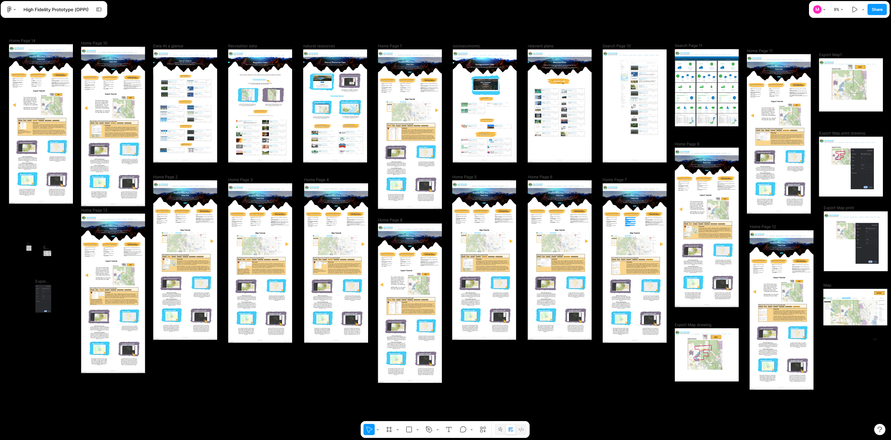
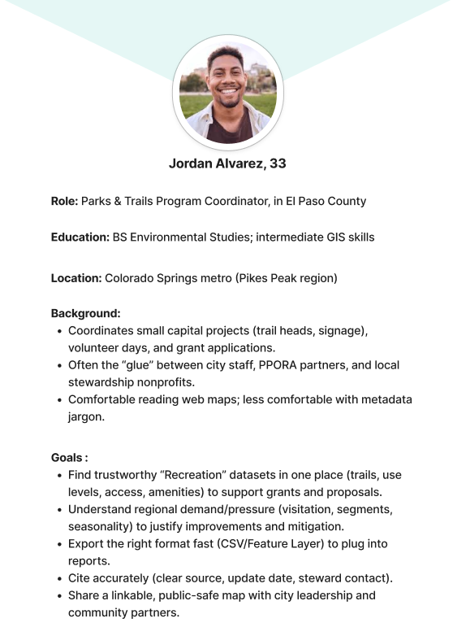
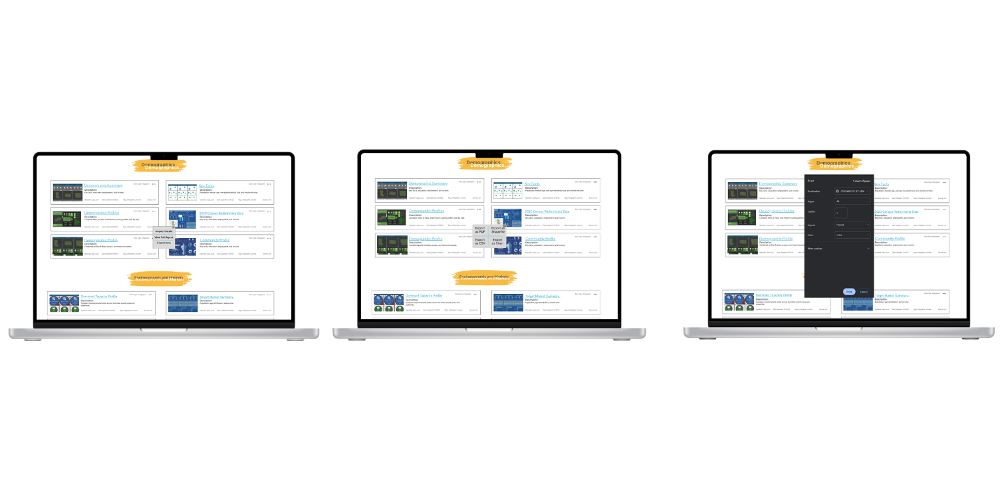
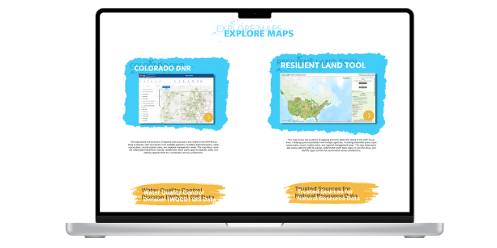
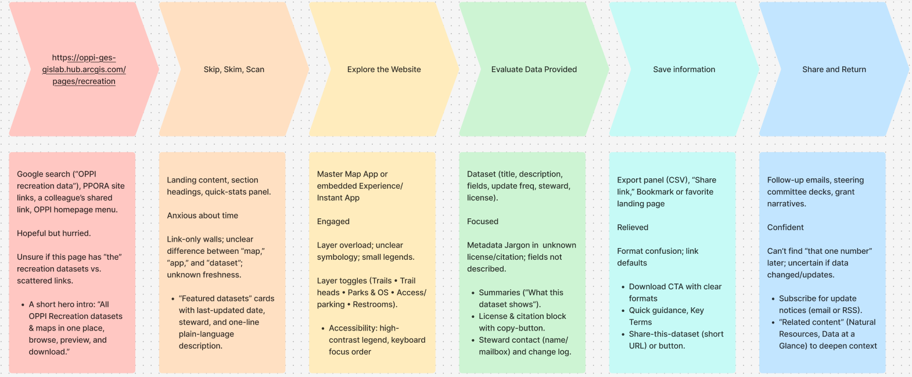

UX Strategy & Information Architecture
OPPI Data Hub Redesign
Redesigned a complex government data hub to improve accessibility, usability, and navigation clarity for diverse public audiences.
Responsibilities
- Feedback sessions with stakeholders
- User testing of site structure
- Developed user flow maps
- Created user flows for primary task scenarios
- Documented requirements and acceptance criteria
- Followed brand and style guidelines

Overview
The OPPI Data Hub serves as a central resource for public-sector data across multiple agencies. The existing site had grown organically over several years, creating navigation friction and structure inconsistencies. This redesign focused on improving navigation and information architecture to create a clear, accessible, and intuitive experience.

Problem & Goals
The primary challenge was a disorganized content structure that made it difficult for users to locate relevant datasets and reports. Business goals included improving search behavior, supporting faster task completion, and creating a scalable architecture for future growth.

My Role
As a Technical Communication and Information Design professional, I led stakeholder interviews and collaborated closely with another information design professional to align workflows with project goals and user needs.

Discovery & Constraints
Discovery included stakeholder interviews, moderated usability sessions, and comparative analysis of related data portals. Constraints included a fixed platform, a tight delivery window, and preserving existing URLs for continuity.

Information Architecture & User Flows
The revised architecture introduced a clearer taxonomy for datasets and an improved hierarchy for filtering and wayfinding. Three key user flows were designed: finding and downloading datasets, exploring trails/reports, and completing a submission workflow from entry point to completion.
Outcomes & Next Steps
The redesign architecture was approved for implementation with full documentation and a broader content strategy rollout planned for future phases. Supporting process work included Figma wireframes, Confluence requirements, and analytics-informed iteration cycles that improved filtering behavior, content labeling, and breadcrumb orientation.